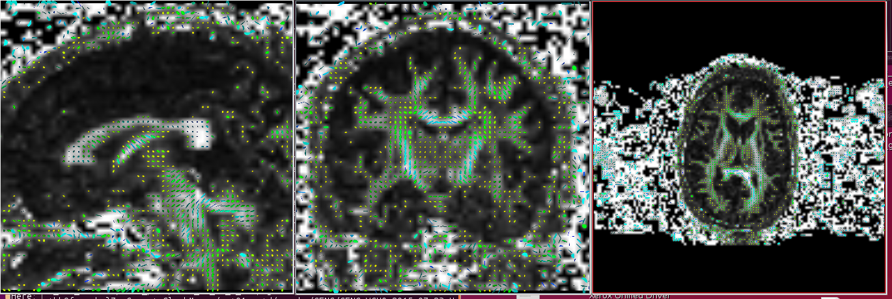

5. CHECK YOUR IMPORT RESULTS¶
Check your import results using the following tools. The outputs from running the following executables will be in the _proc folder to be viewed using any visualization software that supports the viewing of RGB format files. You will find the following executable in the ./TORTOISE31/DIFFCALC31/bin folder:
Linear fitting should be performed to output a DT.nii
Usage: EstimateTensorWLLS full_path_to_listfile full_path_to_mask_file (optional) dti_bval_cutoff (optional. all volumes will be used)
- Non symmetric heuristic maps You can check the non symm heuristic map to determine if the data has been imported correctly by checking the non symm directionally encoded color maps.
Usage: ComputeDECMapNS full_path_to_tensor_image


- Gyphs Tensor glyphs can also be viewed to determine if the import is correct
- Usage: ComputeGlyphMaps full_path_to_tensor_NIFTI_file axis (optional) slice_number (optional) full_path_to_output (optional)
- Axis: axial, sagittal or coronal. Default axial. slice_number: default center slice
Gyphs can be useful in detecting if the data has been imported correctly. It is sometimes not sufficient to look at just the axial slice as the difference maybe more evident in the coronal and/or sagittal slices. Notice in the example below, the glyphs in the axial slice appears correct in both imports but the difference is seen in the coronal and sagittal slices.
Correct

Incorrect (example when x and y are flipped)
